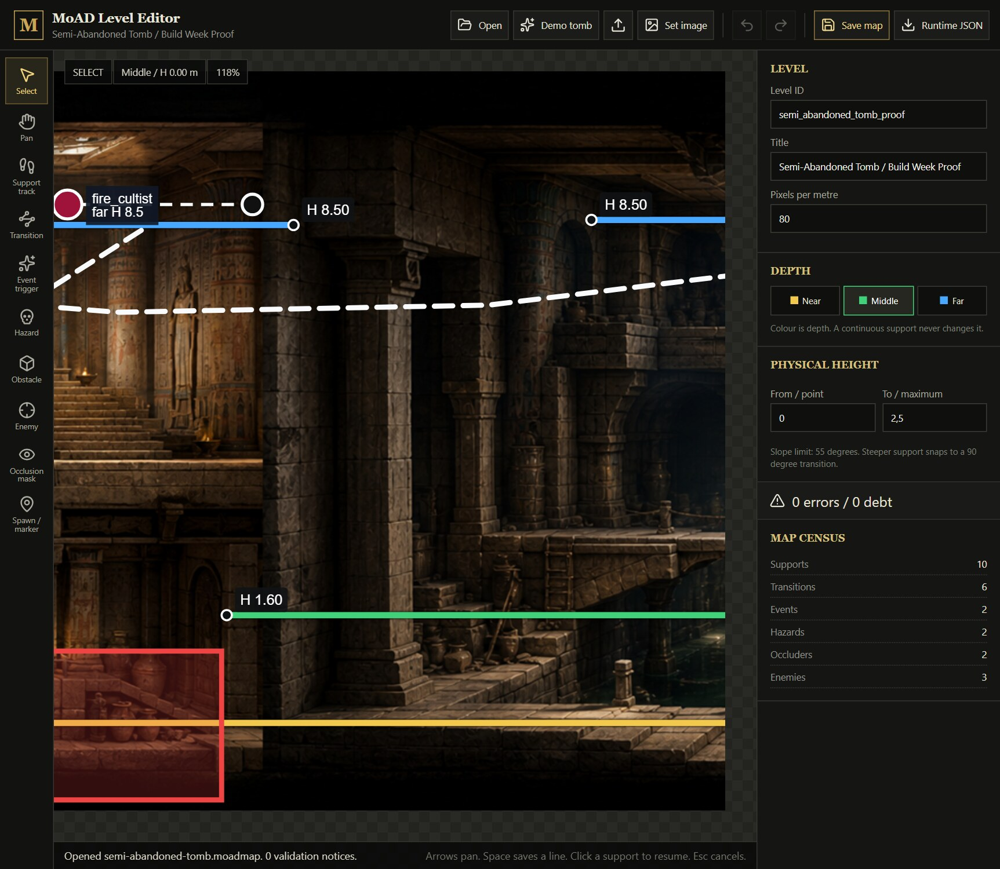

Eugene Lyssovsky
Creator, game and narrative designer, canon owner, level author, producer, and uncompromising final playtest gate.
A painted occult action-adventure · Built in public
Egypt, 1935. Two parents enter an ancient nightmare to recover their nine-year-old son. The story is written. The investor alpha works. Now we are building the game without sanding away its soul.
The game
In 1935, Lord Eugene and Lady Alice Compton enter Egypt's forbidden ruins to recover their stolen son. Movement has the weight of rotoscoped cinema; gunplay follows tabletop-derived RURK rules; narrative decisions interrupt and reshape the expedition.
The current investor alpha runs on our own C# runtime. Its 2.5D world model separates depth from physical height, resolves support surfaces instead of invisible platform guesses, and keeps combat, movement, narrative, and rendering behind explicit contracts.

Working developer tool
Traditional 2.5D pipelines hide collision away from the background that players actually see. That is how heroes float above floors, fall through painted bridges, and change scale on the wrong staircase.
Our editor makes the picture authoritative. Designers draw support tracks directly under a character's feet. Colour records depth; numbers record physical height; bound transitions describe stairs, ladders, ledges, cliffs, elevators, and depth changes.
Cinematic prologue
Thirteen illustrated scenes move from the Valley of the Kings and the Great War to the disappearance of Alexander Compton. Alice writes in her Moleskine; Eugene answers through an Underwood. Directed voice performances and environmental sound carry the same canon as the game.
Enter the prologue


Illustrated novella · complete
Some doors should remain closed. Some powers should never be found.
The complete illustrated prelude establishes the Comptons, their war, their marriage, and the loss that drives them into ancient darkness. It is not auxiliary lore: it is the emotional and canonical foundation of the playable story.
Built as a human–AI studio
Creator, game and narrative designer, canon owner, level author, producer, and uncompromising final playtest gate.
Persistent engineering collaborator: architecture, implementation, integration, visual tooling, technical direction, testing, and release preparation.
This repository is not a prompt demo. It records an ongoing two-author production practice in which decisions, code, art contracts, failures, and fixes are developed in dialogue and verified in the running product.
One source of truth